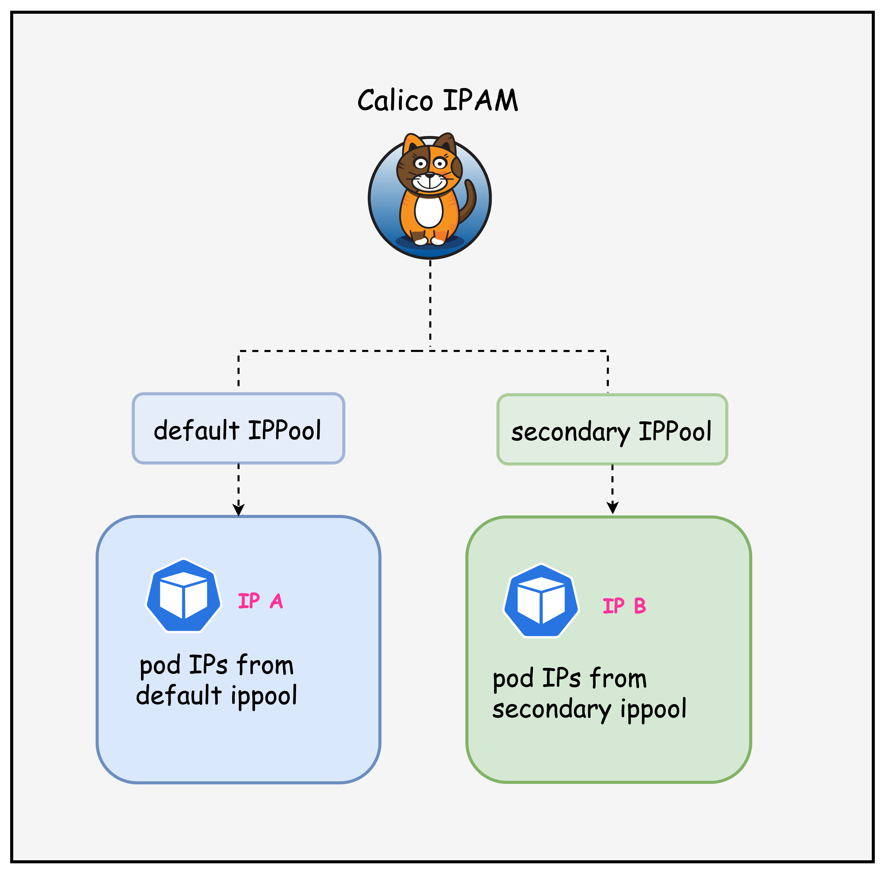

ContainerLab
cEOS + KindLesson 09 · Calico IPAM · Workload Annotations
把同一个 Pod CIDR 划分成两个地址池，让普通工作负载走默认池，让指定工作负载按需进入 Secondary 池。
Address allocation boundaries
192.168.0.0/17
匹配所有节点，未指定地址池的 Pod 从这里分配。
192.168.128.0/17
默认不匹配任何节点，只接受显式请求该池的工作负载。
边界：IPPool 只改变地址分配范围，不会自动建立 NetworkPolicy，也不会阻止两个池之间通信。
Same physical lab, different focus
Workload IPPool、Pod 注解和 IPAM block。
BGP peer、LoadBalancer 池与 nginx LoadBalancer Service。
containerlab/09-multi-ippool
| 目录 | 关键文件 | 本节用途 |
|---|---|---|
| ContainerLab | topology.clab.yaml | cEOS 与 3 节点 Kind 拓扑 |
| Kind | k01-no-cni.yaml | 关闭默认 CNI，Pod CIDR 192.168.0.0/16 |
| Calico | custom-resources.yaml | 创建 Default 与 Secondary Workload 池 |
| BGP / LB | bgpconfiguration-*.yaml、bgppeer.yaml、lb-ippool.yaml | 继承实验基础设施 |
| Tools | multitool-1.yaml、multitool-2.yaml、nginx-deployment.yaml | 对比变更前后的 Pod IP |
Course overview

同一节点可以同时持有不同 IPPool 的 IPAM block，Pod 根据选池结果从对应 block 获取地址。
k01-no-cni.yaml
networking:
disableDefaultCNI: true
podSubnet: 192.168.0.0/16
serviceSubnet: 10.96.0.0/16两个 Workload 池正好把 Kubernetes Pod CIDR 的低半段与高半段各占一个 /17。
Deployment chain
cEOS + Kindoperator + dual poolspeer + LB IPPooltwo DaemonSets + nginx课程脚本输出中的拓扑名仍是 calico-bgp-lb，这是继承前一实验的命名，不影响 Multi-IPPool 行为。
First verification
$ containerlab inspect topology.clab.yaml
k01-control-plane running
k01-worker running
k01-worker2 running
clab-calico-bgp-ceos01 running$ export KUBECONFIG=$(pwd)/k01.kubeconfig
$ kubectl get nodes
k01-control-plane Ready v1.32.2
k01-worker Ready v1.32.2
k01-worker2 Ready v1.32.2先确认节点 Ready，再分析 IPPool。CNI 未就绪时，Pod 不会进入正常的 IPAM 分配阶段。
CIDR partition
每个 /17 包含 32,768 个地址，Calico 再以 /26 为单位按需分配到节点。
custom-resources.yaml
- name: default-ipv4-ippool
blockSize: 26
cidr: 192.168.0.0/17
encapsulation: VXLANCrossSubnet
natOutgoing: Enabled
nodeSelector: all()
disableBGPExport: true- name: secondary-ipv4-ippool
blockSize: 26
cidr: 192.168.128.0/17
encapsulation: VXLANCrossSubnet
natOutgoing: Enabled
nodeSelector: "!all()"
disableBGPExport: true两池的封装、NAT 与 blockSize 相同，决定自动分配行为的差异只有 `nodeSelector`。
Same pool features, different selector
| 字段 | Default | Secondary | 影响 |
|---|---|---|---|
| CIDR | 192.168.0.0/17 | 192.168.128.0/17 | Pod 地址所属范围 |
| blockSize | /26 | /26 | 节点按需获得 64 地址 block |
| nodeSelector | all() | !all() | 自动选池是否考虑该池 |
| Workload annotation | 不需要 | 显式请求 | 指定 Pod 使用哪个池 |
Selector semantics
Secondary 不进入候选池，因此不会创建 Secondary block。
工作负载指定池名，注解优先于 IPPool nodeSelector。
CNI selection path
CNI 只在 Pod 网络创建时执行选池。运行中的 Pod 不会因为后来增加注解而原地更换 IP。
kubectl get ippools
$ kubectl get ippools
NAME CREATED AT
default-ipv4-ippool 2025-10-06T20:11:19Z
loadbalancer-ip-pool 2025-10-06T20:12:45Z
secondary-ipv4-ippool 2025-10-06T20:11:19ZallowedUses separates responsibilities
kind: IPPool
metadata:
name: loadbalancer-ip-pool
spec:
cidr: 172.16.0.240/28
blockSize: 28
assignmentMode: Automatic
allowedUses:
- LoadBalancer给 LoadBalancer Service 分配外部地址。
地址范围是 172.16.0.240/28。
观察 Workload block 时排除 load-balancer 条目。
Initial block affinities
$ kubectl get blockaffinities
k01-control-plane-192-168-69-0-26
k01-worker-192-168-42-192-26
k01-worker2-192-168-88-192-26
load-balancer-172-16-0-240-28tools/multitool-1.yaml and multitool-2.yaml
每个节点一个 Pod
HTTP 80 / HTTPS 443始终保留 Default 池每个节点一个 Pod
HTTP 8080 / HTTPS 8443稍后切换到 Secondary 池两个 DaemonSet 都容忍 control-plane taint，因此三台节点各有一个实例，便于比较每个节点的 block。
kubectl get pods -o wide
| 工作负载 | 节点 | 课程示例 IP | IPPool |
|---|---|---|---|
| multitool-1 | worker | 192.168.42.194 | Default |
| multitool-1 | control-plane | 192.168.69.2 | Default |
| multitool-1 | worker2 | 192.168.88.200 | Default |
| multitool-2 | 三台节点 | 192.168.42/69/88.x | Default |
| nginx | worker / worker2 | 192.168.42/88.x | Default |
判断池归属先看 CIDR，不要依赖 Pod 名称。所有地址都小于 192.168.128.0。
Configured does not mean allocated
kubectl get ippools 只能证明池对象存在；kubectl get blockaffinities 才能证明节点是否已经获得该池的 block。
Exact annotation encoding
metadata:
annotations:
cni.projectcalico.org/ipv4pools: '["secondary-ipv4-ippool"]'池名必须与已经存在的 IPPool 资源匹配。请求不存在的池会让 Pod sandbox 网络创建失败。
Patch multitool-2
kubectl patch daemonset multitool-2 -p \
'{"spec":{"template":{"metadata":{"annotations":{
"cni.projectcalico.org/ipv4pools":"[\"secondary-ipv4-ippool\"]"
}}}}}'Old IP cannot be changed in place
给运行中的 Pod 后补注解不会重新执行 CNI。必须重建 Pod 才能获得另一个池的地址。
CNI to IPAM
节点没有 Secondary block 时，IPAM 先创建 Block Affinity，再从该 block 分配 Pod IP。
kubectl get pods -o wide
| Pod | 节点 | 课程示例 IP | 地址池 |
|---|---|---|---|
| multitool-2-rxh2b | worker2 | 192.168.216.192 | Secondary |
| multitool-2-tc274 | worker | 192.168.170.192 | Secondary |
| multitool-2-xwzrw | control-plane | 192.168.197.0 | Secondary |
| multitool-1 / nginx | 原节点 | 192.168.42/69/88.x | Default |
Pod 名称与 IP 都发生变化，说明 DaemonSet 完成了重建，而不是对旧 Pod 原地修改。
Classify by address range
第三个八位组为 0 到 127。
第三个八位组为 128 到 255。
Block affinities after rollout
| 节点 | Default block | Secondary block |
|---|---|---|
| control-plane | 192.168.69.0/26 | 192.168.197.0/26 |
| worker | 192.168.42.192/26 | 192.168.170.192/26 |
| worker2 | 192.168.88.192/26 | 192.168.216.192/26 |
Secondary block 的创建时间晚于 Default block，与 DaemonSet patch 和 Pod 重建时间对应。
On-demand affinity creation
DaemonSet 在三台节点各创建一个 Pod，因此三台节点都需要 Secondary block。
One node, two IPAM blocks
Address pool is not a security boundary
两个池都属于 Calico 网络，Felix 为 block 安装路由。
需要隔离时配置 NetworkPolicy，而不是依赖地址池名称。
Optional extension
apiVersion: v1
kind: Namespace
metadata:
name: secondary-workloads
annotations:
cni.projectcalico.org/ipv4pools: '["secondary-ipv4-ippool"]'Selection precedence
显式注解会覆盖池的 nodeSelector 自动选择行为。本实验正是利用这个优先级请求 !all() 的 Secondary 池。
Configuration pitfalls
Pod sandbox 创建失败，事件中出现 IPAM 错误。
忘记 JSON 数组或 shell 转义，CNI 无法解析。
CNI 不会重跑，IP 保持不变。
IPPool 校验失败或地址规划产生冲突。
allowedUses 不包含 Workload，不能作为 Pod 池。
没有 NetworkPolicy 时，跨池通信仍可能成功。
Find the first failed stage
| 现象 | 检查对象 | 命令 | 判断 |
|---|---|---|---|
| 只看到一个 Workload 池 | Installation / IPPool | kubectl get installation default -o yaml; kubectl get ippools | Secondary 是否创建成功 |
| patch 后 Pod 未变化 | DaemonSet 模板与 rollout | kubectl get ds multitool-2 -o yaml; kubectl rollout status ds/multitool-2 | 注解是否进入 Pod template |
| 新 Pod Pending / ContainerCreating | Events 与 CNI 日志 | kubectl describe pod POD; kubectl logs -n calico-system daemonset/calico-node -c calico-node --tail=100 | 池名、格式、IPAM 容量 |
| Pod 仍拿 Default IP | 实际 Pod 注解 | kubectl get pod POD -o jsonpath='{.metadata.annotations}' | 新 Pod 是否继承注解 |
| IP 正确但通信失败 | 路由与 NetworkPolicy | ip route; kubectl get networkpolicy -A | IPAM 已成功，转向数据面 |
顺序：池对象、Pod 模板、Pod 重建、Block Affinity、实际 IP，最后再查路由和策略。
Before and after evidence
containerlab inspect topology.clab.yaml确认 cEOS 与 Kind。export KUBECONFIG=$(pwd)/k01.kubeconfig切换到 k01。kubectl get ippools -o wide区分三个池。kubectl get blockaffinities记录变更前 block。kubectl get pods -o wide证明全部来自 Default。kubectl patch daemonset multitool-2 ...写入 Secondary 注解。kubectl rollout status ds/multitool-2等待 Pod 重建。kubectl get pods -o wide观察高半段 IP。kubectl get blockaffinities验证三条 Secondary /26。kubectl exec POD -- ping TARGET_IP验证跨池通信。清理：运行 ./destroy.sh，检查将删除的 topology、Kind cluster、容器、网络与 kubeconfig 后输入 yes。
Summary and sources
两个 /17 地址范围共享相同网络参数，selector 控制自动候选。
Pod template 的 ipv4pools 注解让新 Pod 请求 Secondary。
IPAM 在实际有 Pod 请求时，才为对应节点创建 Secondary /26。